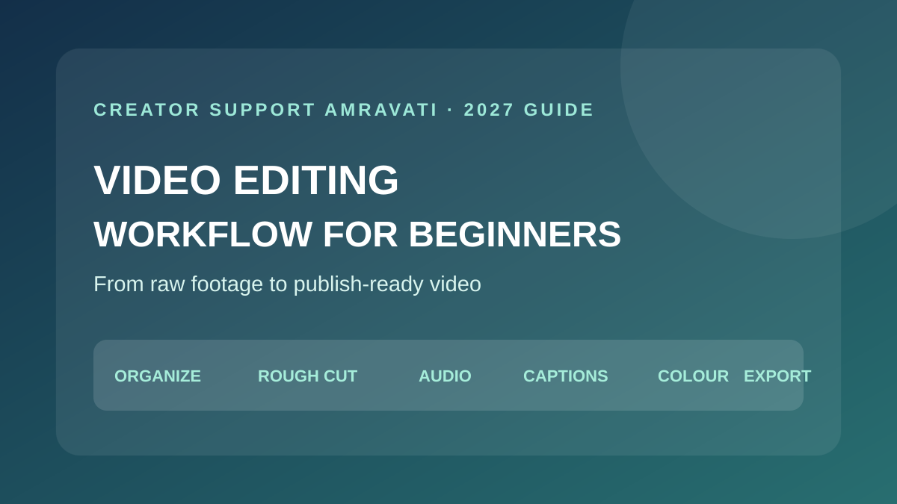
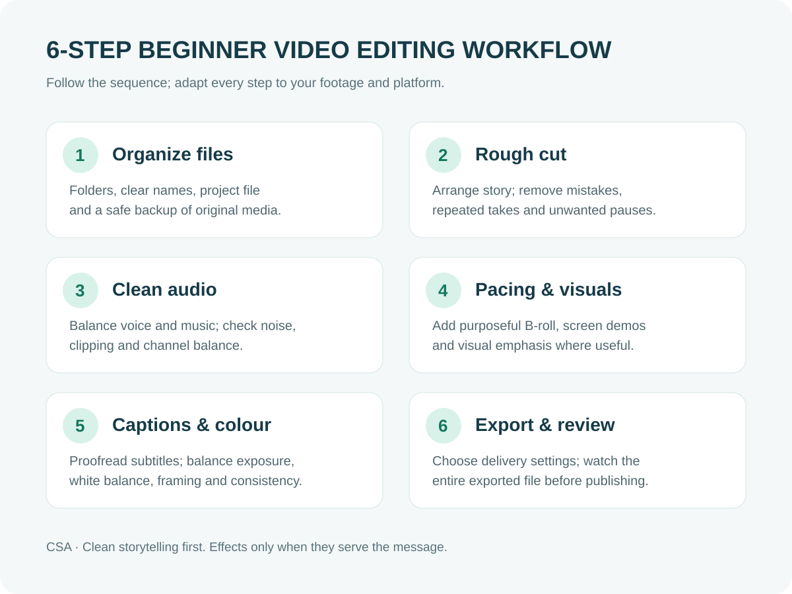

Beginner Creators Ke Liye Basic Video Editing Workflow: Kahan Se Shuru Karein? (2027 Guide)
Naye creators ke liye editing software kholte hi sabse bada sawal hota hai: pehle kya karein? Kya transitions add karein, music lagayein, captions banayein ya colour correct karein? Ek simple order follow karne se confusion kam hota hai. Is guide ka focus flashy effects par nahi, balki clear storytelling, understandable audio aur repeatable process par hai—taaki aap har project ko organized tareeke se complete kar sakein.

- Naye creators ke liye clean workflow kyun useful hai
- Raw footage se publish-ready video tak ke six steps
- Over-edited aur clean edit ke beech practical difference
- Common mistakes, final checklist aur FAQs
1. Editing Shuru Karne Se Pehle: Folder Aur File Discipline
Editing ka time aksar missing clips, duplicate files aur unclear names dhoondhne mein waste hota hai. Har project ke liye ek master folder banayein aur assets ko predictable subfolders mein rakhein. Example:
- 01_Raw_Footage: Camera ya phone se aayi original video clips. Original files ko alag safe location par backup karein.
- 02_Audio_Voiceover: External microphone recordings, voiceovers aur approved music/SFX.
- 03_Graphics_Broll: Logos, screenshots, charts, titles aur supporting video clips.
- 04_Project_Files: Editing software ka project file, proxies aur reusable assets.
- 05_Exports: Review versions aur final rendered files. Version names clear rakhein, jaise
topic_v01_review.mp4aurtopic_v02_final.mp4.
File naming mein date ya project code add karna helpful ho sakta hai. Ek separate backup copy rakhein—sirf editing drive par original footage chhodna risky hai. Agar software media ko external drive se link karta hai, toh folder move karne se pehle project relinking ka process samajh lein.
2. Beginner Video Editing Ke 6 Practical Steps
Step 1: Rough Cut — Dead Air Aur Galat Takes Hatayein
Sabse pehle clips ko story ya script ke order mein arrange karein. Long pauses, accidental recording, repeated takes, irrelevant sections aur obvious mistakes ko trim karein. Abhi transitions, animations ya sound effects par time spend na karein.
- Opening mein viewer ko topic aur video ka purpose jaldi samajh aaye.
- Important explanation ko itna trim na karein ki context ya natural delivery toot jaye.
- Sentence ke beech unnatural jump cuts hon toh alternate take, B-roll ya clean audio edit use karein—sirf tab jab meaning clear rahe.
Goal: Ek understandable first assembly banayein jisme main message logical order mein flow kare.
Step 2: Audio Cleanup Aur Volume Balance
Voice clarity ko early stage mein address karein. Headphones se recording sun kar constant hum, handling noise, clipping, echo aur distracting background sounds identify karein. Noise reduction ko moderate rakhein; aggressive processing voice ko metallic ya unnatural bana sakti hai.
- Voice aur music ke levels balance karein; background music dialogue ko mask na kare.
- Sudden loudness changes aur harsh sound effects ko tame karein.
- Mono/stereo routing aur left-right channel balance check karein.
- Noise gate, EQ aur compression ko subtle use karein; har recording ko same preset blindly apply na karein.
Goal: Viewer bina volume baar-baar adjust kiye dialogue ko comfortably samajh sake. Koi ek loudness number har platform aur content type ke liye universal target nahi hota; platform guidance aur listening test dono use karein.
Step 3: Pacing Aur Meaningful Visual Variety
Rough cut aur audio stable hone ke baad dekhein ki har section audience ko aage kya de raha hai. Repeated ideas trim karein, explanations ko logical order dein aur jahan concept ko visual support chahiye wahan relevant B-roll, screen recording, diagram ya example add karein.
- Zoom, crop ya angle change tabhi add karein jab emphasis ya visual rhythm ko support kare.
- Demonstration wale parts mein screen recording ya close-up dikhayein.
- Key takeaway ko short on-screen text se reinforce kar sakte hain.
- Har 10–18 second mein change karna compulsory nahi. Visual change ka interval topic, shot aur audience ke viewing context ke hisaab se decide karein.
Goal: Video ka pace natural rahe aur visual changes information ko clearer banayein—not distract.
Step 4: Captions / Subtitles Aur Visual Clarity
Captions ko final polish ke roop mein add karein. Auto-caption tools time save kar sakte hain, lekin names, technical terms, numbers aur Hindi-English mixed words ko manually verify karna zaroori hai.
- Font size mobile screen par readable rakhein.
- Text ko face, product, important UI controls ya platform buttons ke upar place na karein.
- Ek screen par bahut zyada words na bhar dein; line breaks natural rakhein.
- High contrast aur consistent style use karein. Zaroorat ke hisaab se subtitles ko editable text ya sidecar caption file ke roop mein export karein.
Goal: Captions spoken content ko accurately support karein aur viewer ko video follow karne mein help karein.
Step 5: Basic Colour, Exposure Aur Framing Check
Colour correction ka pehla aim shots ko consistent aur natural banana hai. Exposure, white balance, contrast aur saturation ko carefully adjust karein. Different cameras ya lighting conditions ke shots ko match karne ki koshish karein.
- Highlights itne bright na hon ki details clip ho jayein.
- Shadows mein zaroori detail bachayein; image ko unnecessary dark na karein.
- White balance neutral rakhein aur skin tones ko unnatural orange, green ya magenta na banayein.
- Horizon, headroom, crop aur subject framing check karein.
Goal: Consistent, comfortable visuals—na ki har clip par heavy cinematic grade.
Step 6: Export Settings Aur Final Pre-Publish Review
Export settings platform, source footage aur intended delivery ke hisaab se choose karein. Common online delivery ke liye MP4 container aur H.264 video codec widely compatible starting point hain; lekin platform ki latest upload guidance ko priority dein.
- Resolution: Source aur platform requirement ke hisaab se 1080p ya 4K choose karein. Low-resolution source ko 4K export karne se missing detail create nahi hoti.
- Frame rate: Project ko generally original recording frame rate ke saath consistent rakhein, jab tak creative ya delivery requirement kuch aur na ho.
- Bitrate: Resolution, frame rate, motion aur codec ke hisaab se suitable bitrate choose karein. Ek fixed bitrate sab videos ke liye ideal nahi hota.
- Audio: Compatible AAC audio setting use karein aur export ke baad headphones/speakers par sync aur clarity check karein.
- Aspect ratio: Long-form landscape aur vertical Shorts/Reels ke liye separate framing/export versions banayein, jab zaroorat ho.
Export ke baad file ko editing timeline ke bahar ek normal player mein poora dekhein. Opening, ending, black frames, missing graphics, spelling, audio sync, clipping aur unexpected volume jumps check karein. Final file ko upload se pehle correct folder mein save karein.

3. Chaotic Over-Edit vs. Clean, Viewer-Friendly Edit
| Editing Element | Chaotic / Heavy Edit | Clean, Purposeful Edit |
|---|---|---|
| Transitions & Effects | Har cut par flash, spin ya loud SFX | Purposeful cuts aur limited transitions |
| Audio Mix | Music voice ko mask karta hai; sudden peaks | Clear dialogue aur controlled background support |
| On-Screen Text | Har sentence par crowded text | Key terms, numbers aur readable captions |
| Pacing | Random zooms aur unrelated B-roll | Visual changes explanation ko support karte hain |
| Colour | Over-saturated look aur inconsistent skin tones | Balanced exposure aur consistent natural colour |
| Workflow | Har project zero se, files scattered | Reusable folders, templates aur final checklist |
4. Beginners Ki 4 Common Editing Galtiyan
- Har effect aur plugin shuru mein use karna: Pehle cuts, story aur audio fundamentals par command banayein. Effects tab add karein jab woh message ko improve karein.
- Background music ko bahut loud rakhna: Music ka purpose mood support karna hai, dialogue ko compete karna nahi. Headphones aur normal phone speaker dono par test karein.
- Sound check ke bina export kar dena: Channel imbalance, clipping, abrupt SFX aur lip-sync issues final review mein pakde ja sakte hain. Exported file ko poora play karein.
- Har video mein bilkul naya style banana: Consistent fonts, caption treatment, colour approach aur intro/outro rules se channel ki visual identity ban sakti hai. Consistency ka matlab har video ko identical banana nahi—format ke hisaab se adapt karein.
5. Beginner Creator Ke Liye Final Export Checklist
- ☐ Project folder organized hai aur original footage ka backup hai.
- ☐ Rough cut mein accidental pauses, repeated takes aur unwanted sections trim hain.
- ☐ Voice clear hai; music aur effects dialogue ko overpower nahi karte.
- ☐ Cuts aur visual changes story ko support karte hain.
- ☐ Captions ke names, spelling, numbers aur timing verify hain.
- ☐ Exposure, white balance, framing aur shot consistency check hai.
- ☐ Resolution, frame rate, codec aur aspect ratio delivery ke hisaab se selected hain.
- ☐ Exported file ko full playback mein audio sync, opening, ending aur graphics ke liye check kiya hai.
- ☐ Final file ka name clear hai aur backup/export location confirm hai.
Aksar Puche Jaane Wale Sawal (FAQs)
1. Ek beginner creator ko video editing seekhne mein kitna samay lagta hai?
Basic cuts, audio balance, captions aur simple pacing kuch practice sessions mein samajh aane lagte hain. Speed aur confidence regular projects se aate hain. Har project ke baad ek improvement choose karein—jaise cleaner dialogue ya better file organization.
2. Kya beginners ke liye expensive editing software zaroori hai?
Nahi. Accessible ya free tools se bhi trimming, audio adjustment, captions aur basic colour correction seekhe ja sakte hain. Pehle workflow aur storytelling samjhein; advanced software tab choose karein jab project requirements uski need create karein.
3. Video edit karte waqt kitni der tak kaam karna behtar hota hai?
Editing session ka duration individual comfort aur task par depend karta hai. Long sessions mein short breaks, eyes ko screen se rest aur headphones se ears ko break dena helpful ho sakta hai. Final colour aur audio decisions fresh attention ke saath review karein.
4. Agar creator ke paas editing ka samay kam ho toh kya kare?
Reusable templates, organized folders, preset graphics aur batch editing se repetitive work kam ho sakta hai. Time limited ho toh clear cuts, understandable voice aur accurate captions ko priority dein. Repetitive editing ya design tasks ke liye suitable production support bhi consider kar sakte hain.
5. Kya har 10–18 second mein visual change karna zaroori hai?
Nahi. Fixed timing rule har video par apply nahi hota. Visual change tab add karein jab woh explanation ko clearer banaye, example dikhaye ya viewer ko relevant information de. Unnecessary zooms aur cutaways attention ko distract kar sakte hain.
Useful Tools & Resources
- Creator Packaging Kit — YouTube aur social content ke titles, descriptions aur hashtags plan karne ke liye.
- Video Editing, Thumbnails & Studio Support — CSA ki video, design aur production services.
- Contact Creator Support Amravati — editing workflow ya production consultation ke liye.
Suggested & Related Articles
- 2027 Ke Liye Indian Creators Aur Businesses Ka Complete Growth Blueprint — retention, packaging aur multi-platform content planning.
- Ek Video Se 10 Content Pieces Kaise Banayein? — ek pillar video ko multiple useful formats mein adapt karna.
- YouTube Thumbnail CTR Kaise Badhayein? High-Click Design Rules — video publish karne se pehle packaging aur thumbnail design.
- Podcast Studio Setup: Ghar Ya Chhote Studio Mein Clean Audio Aur Video — better source recording ke liye practical studio setup.
Helpful Official Guidelines & References
- YouTube Help Center — publishing, video quality aur creator resources.
- Google Search Central: Creating Helpful, Reliable, People-First Content.
About the Author
Rajkumar Chavhan ek digital marketing specialist (8+ years experience) aur Creator Support Amravati (CSA) ke founder hain. Woh video & Reels editing, graphic design, YouTube packaging, SEO, web development aur studio production ke zariye creators, educators aur businesses ko unki digital presence grow karne mein madad karte hain.
- Website: creatorsupportamravati.in
- Studio & Office: Vyanktesh Complex, Shop No. F-101, Mahendra Colony, Naredi Nagar Road, Amravati, Maharashtra 444604
Editorial Disclosure: Yeh guide educational aur informational purpose ke liye hai, taaki beginner creators basic video editing aur production workflow samajh sakein. Editing results footage, equipment, software aur practice ke hisaab se vary karte hain. Production support ke liye aap Creator Support Amravati se jud sakte hain.